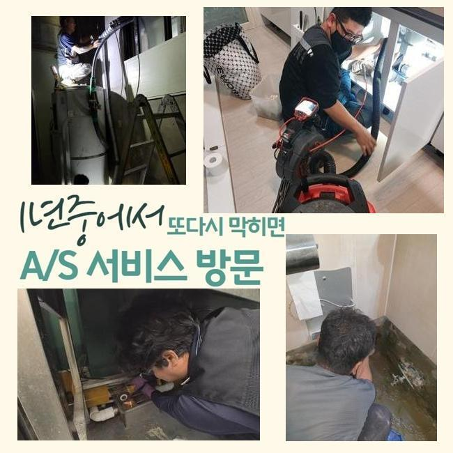
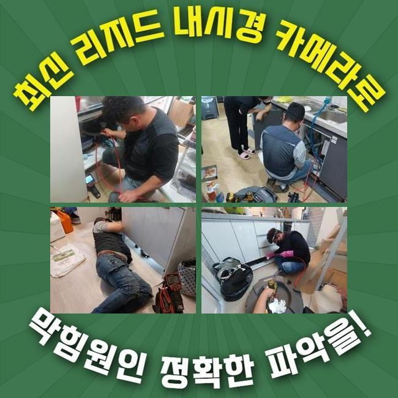
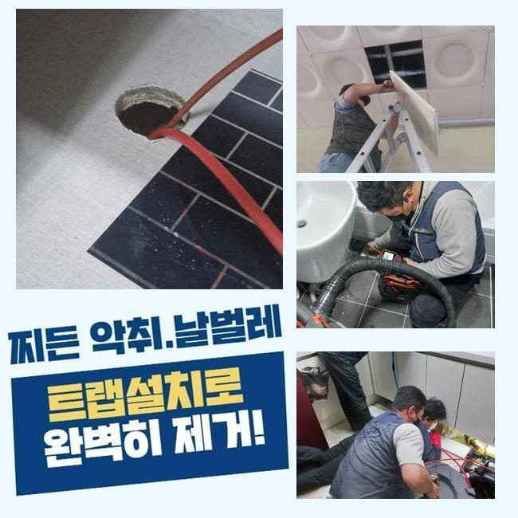
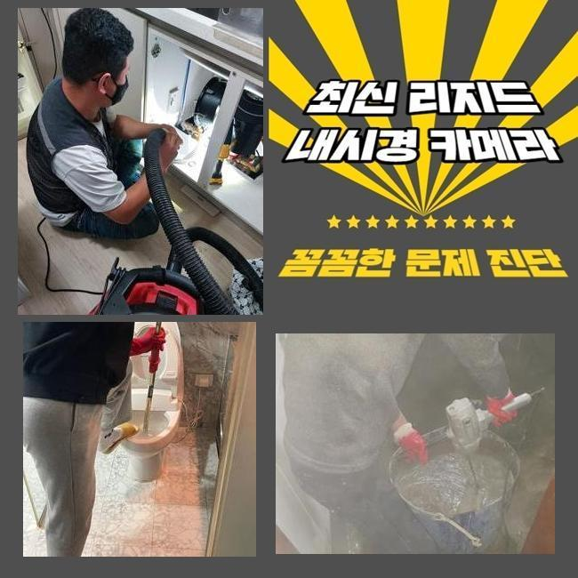
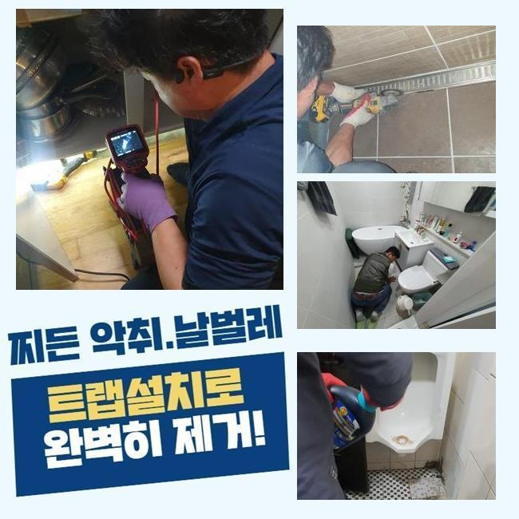
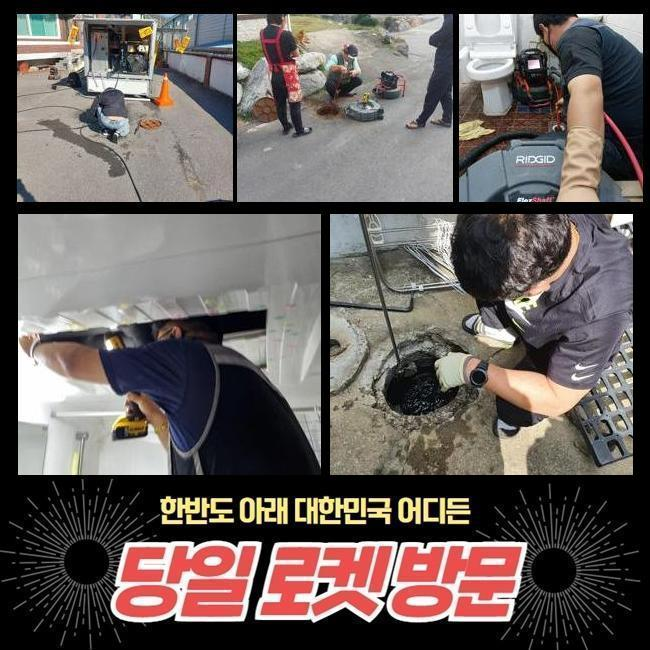

🏠 수원 남향동싱크대뚫음 지동 맨홀막힘 배관막힘누수
수원 지동 싱크대막힘 전문 시공 후기

📋 작업 개요
- 위치: 수원 지동, 지동, 수원
- 서비스 유형: 싱크대막힘, 하수구막힘, 배관막힘, 맨홀막힘, 누수수리, 역류해결, 뚫는업체, 배관청소, 고압세척, 설비공사, 악취차단
- 작업 일시: 2024. 12. 12. 19:01
- 업체명: 하수구수사대 (010-5615-2118)
🔍 문제 상황
수원 남향동싱크대뚫음 지동 맨홀막힘 배관막힘누수
하수구 관련 장애가 생긴다면 그 힘듦은 정말 말할 것도 없는데요
이렇다할 하자가 없던 하수구가 불시에 비정상적으로 변하고 더불어 하수의 역행까지도 존재감을 드러내기도 해요
이러한 사고가 터지기 이전에 빠릿빠릿하게 하수관을 쉽게 정리하는 방식도 있으니 이 글을 참고하셔서 고객님 댁의 시설물들도 셀프 테스트를 한 번 해보세요
물을 못쓰게 만드는 하수관 중단을 조속히 고쳐줬으면 한다는 접수를 받고서 행동을 서둘러서 현장으로 향하게 되었습니다
하수구 속이 꽉 막히면 하수 역류도 동시에 생기면서 종류가 가지각색인 오물들이 집을 정복하고 불쾌한 악취까지도 무시못하게 방출됩니다
여러가지 사유로 인해서 골치가 아프셨던 고객분이 불안함을 견디다가 끝내 서비스를 요청해 주신 거였어요
집의 하수구가 마비된다면 홀로 여러 시도를 하면서 통로를 확보하려고 해보시는데요
단순한 막힘건이라면 강한 물살을 퍼붓거나 사용법만 보면 쉽게 사용되는 하수구를 관통하는 기구나 액상을 부어서 길을 내보기도 하는데요
많은 어려움을 감수하면서까지 하수관을 직접 관통시켜도 억울하게도 재발이 생기기에 허망한 기분이 듭니다
대응법을 잘 모르신다면 오늘의 글에서 정보를 얻어가시고 모든 하수구에 능숙한 업체를 선택해서 난관을 극복하시길 여러분께 추천드리겠습니다!

🔎 원인 분석
💡 전문가 진단: 정밀 진단 장비를 사용하여 슬러지의 고착 여부를 판명하고 타격/세척 작업을 실시했습니다.
막힘이 일어난 곳을 살펴보니 막혀있는 구멍에서 생긴 역류도 동시에 목격이 됐는데요
더러운 물이 반대로 흐르면 악취도 상당하게 퍼지고 세균까지 확산되어서 물이 나가게해서 정화해야 합니다!
귀 기울여서 입장을 들어봤는데 나름 규칙적으로 배관 정비를 진행했음에도 이런 문제점들이 꼬리를 물고 나타났다고 해요
고객님의 호실 외에도 다수의 호실 내부에서 유사한 피해를 입었다면 가지배관이 연결되는 메인배관 중에 중중한 결함이 일어난 케이스일 수 있어요
특정 호실에서 정비를 해줘도 일회성 해결책이다보니 전체적인 메인 관로의 체계적인 검토 절차가 필요하죠
월례행사처럼 정기점검 일자를 계획해서 사전에 잘못될만한 요소가 없는지 끊임없이 체크해야 합니다
하수처리가 안되는 현황을 타개하려고 먼저 일번타자로 등판하는 내시경으로 간략한 상황파악을 해줬습니다
야외까지 나아가는 지점의 파이프라인의 외관이 이상하다는 진실을 파악하게 됐고 공용인 메인 배관을 열어보기로 마음을 먹었네요
뚜껑을 조심히 들어내자 수많은 오염원이 범람했고 입출구부터 흐름이 차단돼서 물이 정상 배출되지 못했다는 진상을 이해하게 됐습니다
심층에서 생긴 문제점이면 기술이 없는 상황에서 셀프처리를 도맡는 것은 부정성이 더 강해요
분명 가벼운 사안이 아니므로 기술력 좋은 업체와 함께 하는게 가능성을 냉철히 따져봐도 좋다고 말씀드리고파요

🔧 작업 과정
먼저 메인관로 내부의 찌꺼기들이 빠지게 만들려고 석션장비를 끌고와서 우선적으로 걸리는 오염원 꺼내는 단계를 시행했어요
이 기구의 힘으로 경로방해를 하는 물질들을 모조리 수습해야 합니다
석션기계는 쉽게 말해 일반적인 청소기와 유사한 원리를 활용하고 있어서 파워가 상당합니다
해당 기계의 운용으로 머무른 장애물들을 모두 거둬들여야만 이후에도 전과 마찬가지인 하수관 기능을 상실하게 되는 트러블이 더는 야기되지 않아요
굵직굵직한 찌꺼기들을 제거하고 재조사를 하고자 내시경 기기를 밀어 넣고서
내부를 채우고있던 찌꺼기들이 온데간데 없이 없어졌으며 수로 자체도 확장된 사실 마저도 체크를 하게 됐네요
석션작동으로 큰 오물들은 없앴지만 미처 처리가 되지 못한 자잘한 이물질 입자들을 싹 다 청산하려면 강력한 압력의 물로 씻는 절차를 시행해야 하는데요
넓은 영역에서 주로 쓰는 기법이며 고압으로 뭉친 물을 쏘아대며 파이프라인에 접착된 끈적한 찌꺼기들을 없애서 청결하게 만드는 일입니다
좁은 배관에다 실시하기는 쓸데없이 강력하지만 공동 배관에 접목하기는 생산성이 높은 고강도 기기 라인업입니다
연식도 중요한데 건물 자체의 메인파이프와 가정 내 배수로까지 상당부분 낡아 있었으므로 깨지고 파괴되는 일이 없게끔 압력을 유연히 조정하여 배관 세정을 실시하였습니다
오랜 시간 고압세척을 되풀이하면서 붙은 물질들을 탈거시키려고 시도했어요
카메라로 마지막으로 작업 체크를 돌입했는데 티끌하나 없이 깔끔해진 설비의 현황이 보여서 기분좋게 과정을 매듭 지었습니다
부담을 덜어드리고자 범위를 줄여주는 게 좋으니까 여러 해결책들을 끝없이 구상하고 궁리합니다
하수구가 연결된 형태라거나 강직도에 따라서 대응법이 달라질 수 있는 부분인데 무작정 고압세척을 돌리면 배관이 데미지를 입어 전체 부품을 변경하면 수리비가 당황스럽게 증가하게 됩니다
애초에 오랜 경력을 보유한 업체를 고르시는 것이 가장 중요합니다
배관은 이해하기 어려운 영역이며 나뭇가지가 퍼진 듯한 구조를 띄고 있기 때문에 지식이 기반이 되어야만 손쉽게 상황을 개선할 수 있습니다
한 공간의 청소만을 해결한다 하여 배관 전체의 기능이 재복구되는 건 힘들고 재발이 굉장히 흔하게 생깁니다


✅ 작업 완료
어설픈 업체가 공사를 해서 처리를 한다면 하수구 세척 작업을 통과했음에도 몇 주 안에 또다시 막혀 다른 시공을 요청해야만 하는 귀찮은 일이 생기며 시간뿐 아니라 비용까지 막대해집니다
하수구가 완전 차단되기 전에 방지를 해줄 수 있는 대안도 있기 때문에 안내해 드리겠습니다!
수공으로 세척을 하거나 클리너를 간혹 부어준다거나 머리카락 유입을 막아주는 장비를 활용하셔도 좋습니다
높은 온도로 물을 틀어서 배관 안으로 흘리거나 거름망을 이용하는 방식도 있지만 이 모든 해결책들을 빠짐 없이 열심히 썼는데도 배관에 문제가 생겼다면 전문가의 손길이 필요하답니다
하수구가 제기능을 잃어버려서 현재 난감하다고 느끼신다면 마음 놓고 와달라고 요구하시면 이것저것 가리지않고 능수능란하게 상담해 드릴게요




⚠️ 베란다 누수 및 방수 관리 방법
- ✅ 비가 많이 올 때 창틀 주변이나 아래층 천장에 얼룩이 생기는지 정기적으로 확인해 보세요.
- ✅ 우수관 주변 실리콘 마감이 들뜨거나 깨진 틈새가 있는지 손상 여부를 수시로 체크하세요.
- ✅ 베란다 바닥 타일의 줄눈(메지)이 소실되면 그 틈으로 물이 침투하여 누수가 유발됩니다.
- ✅ 누수 의심 증상 발견 시 방치하면 아래층 손실이 커지므로 즉시 전문가의 진단을 받으십시오.
💡 핵심 정리
- 확실한 장비 작업(내시경 점검 및 샤프트 스케일링)으로 원인을 뿌리 뽑습니다.
- 작업 후 1년 이내에 동일한 부위 재발 시 100% 무상 A/S 서비스를 보장합니다.
- 서울 · 경기 · 인천 전 지역에 24시간 언제든 긴급 출동할 수 있도록 항시 대기 중입니다.
❓ 자주 묻는 질문 (FAQ)
🚨 수원 지동 싱크대막힘 문제로 고민이신가요?
정확한 원인 진단과 확실한 시공으로 재발 없는 해결을 약속드립니다.
24시간 긴급 출동 | 서울 · 경기 · 인천 전지역 | 1년 내 재발 시 무상 A/S